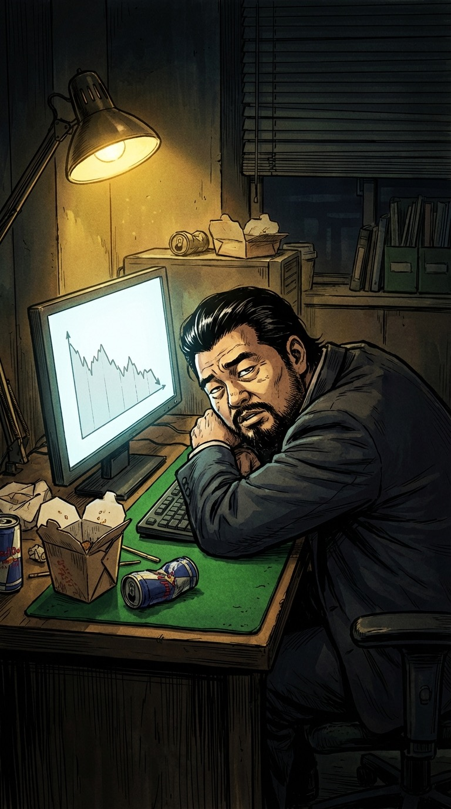
【远景·固定镜头】凌晨三点半。第48个小时。
Loss曲线终于从0.73降到了0.71。朱江知道这个模型如果能降到0.65以下就能商用，但账上的钱只够再烧两个月。
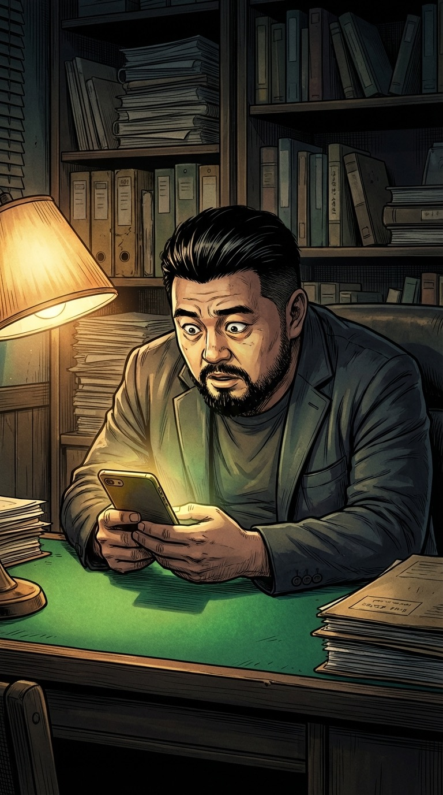
【中景·平拍】手机亮了。来电显示"赵哥（天使轮）"。
赵哥是他的天使投资人，投了200万。凌晨三点打电话——不是好事。
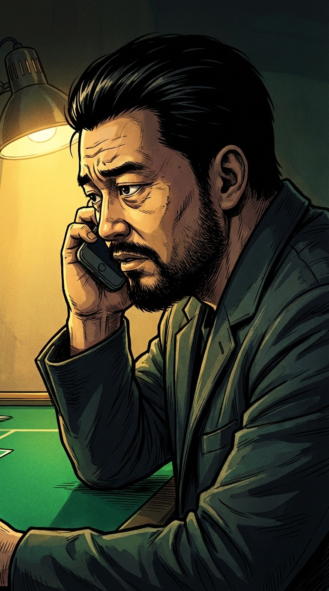
【特写·侧面】台灯暖光照亮半张脸。表情从疲倦变成凝重。
赵哥（电话里，声音发抖）："小朱，哥遇到点事……能不能出来一趟？"
朱江："赵哥，三点半了。"
赵哥："我知道……但这事只有你能帮我。"
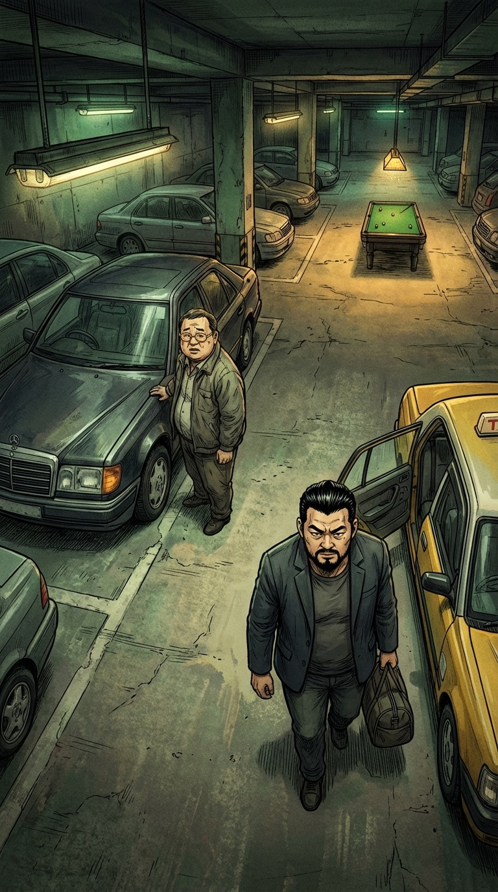
【全景·俯拍】高档小区地下车库，灯光昏暗。赵哥靠在奔驰车门上。
赵哥的奔驰还在，说明还没到卖车的地步。但赵哥的手在抖——上次看他这样，是那笔地产投资暴雷的时候。
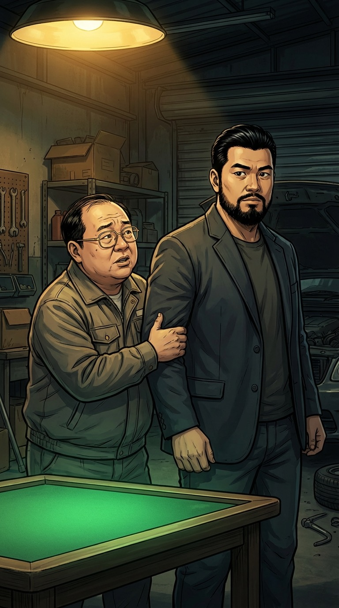
【中景·平拍】赵哥双手握住朱江手臂。
赵哥："我在林远的牌局里输了200万。"
200万。正好是他投我的天使轮金额。命运真幽默。
朱江："赌的？"
赵哥："德州。我以为我能赢回来……"
朱江："你跟我说这个，是因为？"
赵哥："林远说可以翻本。明晚还有一场。但我不敢再上了——我需要一个人替我打。"
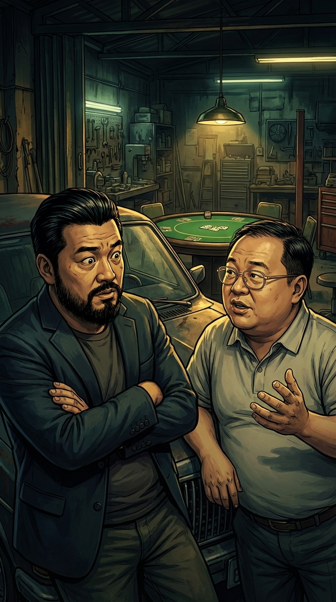
【中景偏近·平拍】两人靠在车上。朱江双手交叉抱胸，眼神专注。
朱江："先说清楚三件事。第一，林远这个人什么背景。第二，牌局里还有谁。第三，规则是标准德州还是有变体。"
赵哥愣了一下——他本以为朱江会先问"多少钱"。
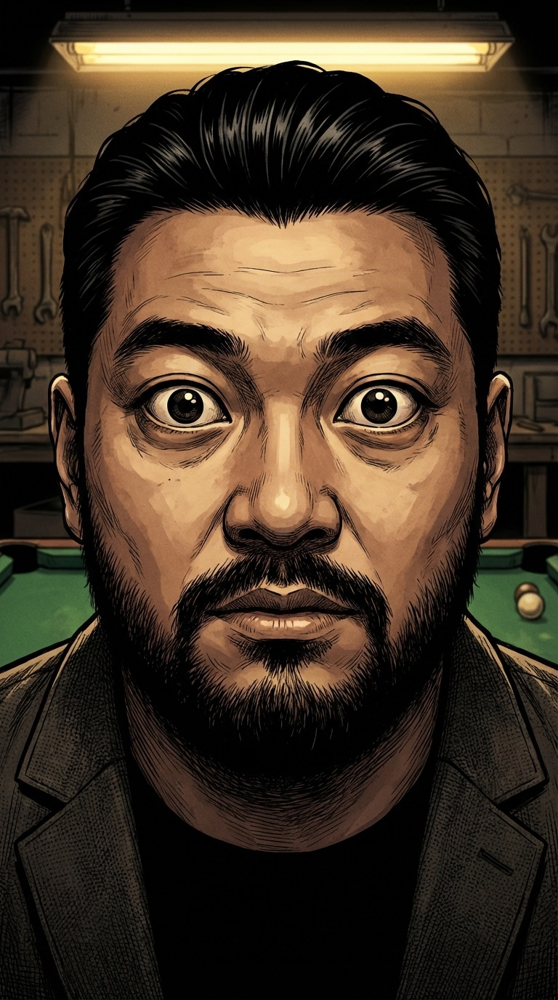
【极特写·朱江瞳孔】瞳孔微微收缩——暗牌感知第一次无意识激活。周围空气仿佛凝固。
赵哥开始讲林远的背景。朱江一边听一边在脑子里建模型——就像调AI参数一样，每一个信息都是一个训练数据点。
然后他注意到一件事：赵哥说到"牌桌上有五个人"的时候，左手食指微微弯了一下。朱江以前从没注意过这种细节。
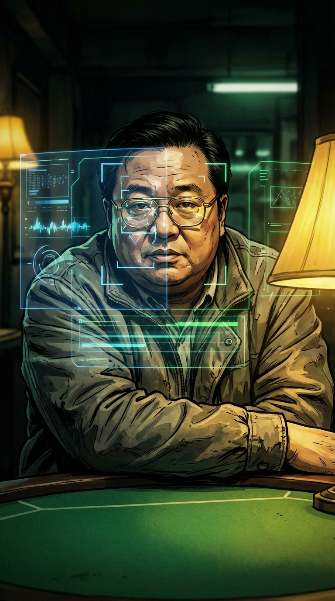
【主观镜头·推镜头】朱江视角——赵哥身上浮现半透明数据叠层。心率估算、微表情标注、手指运动轨迹。
这是什么？心率偏高、眼球右移频率增加（回忆性撒谎特征）、左手食指弯曲（隐瞒信息时的安慰性动作）。48小时盯着概率分布图的后遗症？还是……
朱江闭了一下眼，再睁开。数据层消失了。他揉了揉眼睛：大概是太久没睡了。
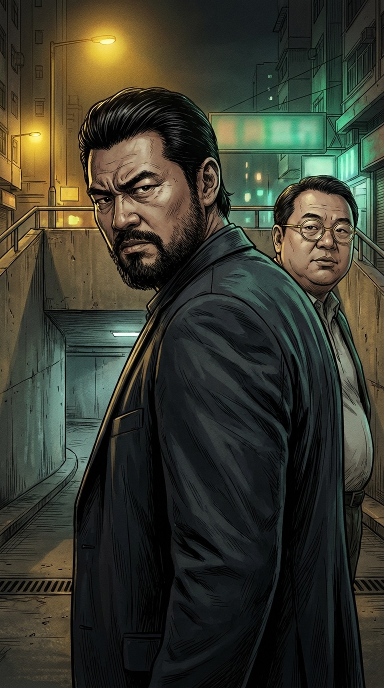
【全景·稍仰拍】车库出口。朱江走向出租车，停下脚步回头。
朱江："赵哥，我有个条件。"
赵哥："你说！"
朱江："赢了，你追加投资100万到我公司。输了——本来也是你的200万，跟我没关系。"
赵哥（愣住）："你……你小子……"
朱江微笑："所有博弈的本质都是信息差。赵哥，你现在的信息差是——你不知道我这两天发生了什么。"
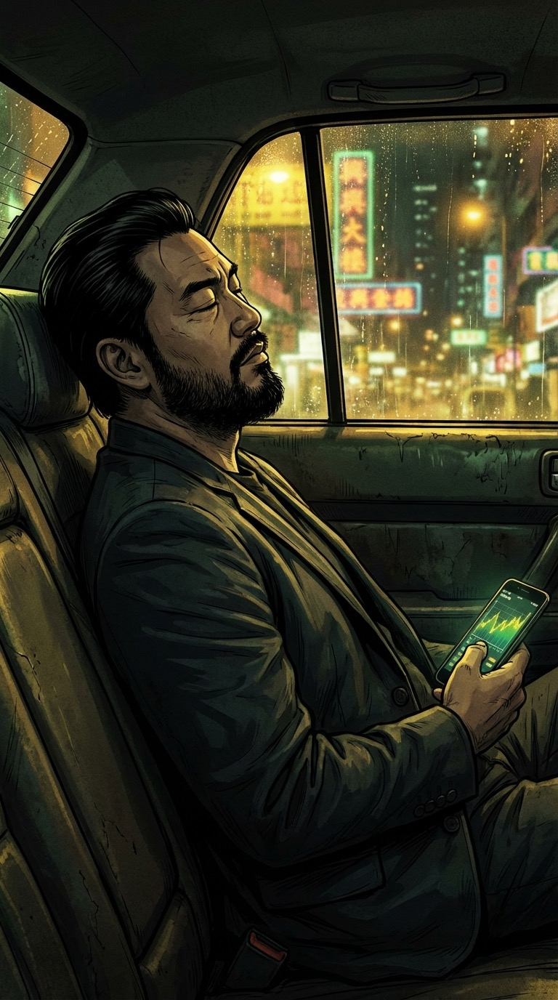
【中景·固定】出租车后座。朱江闭眼靠椅背，手机屏幕亮着——Loss曲线。
他的AI在学习识别模式，而他自己……好像也在。
如果我能在牌桌上"读"到对手的数据——那不就是一个活的AI模型吗？输入是微表情，输出是概率分布。
妈的，我是不是变成自己的产品了。
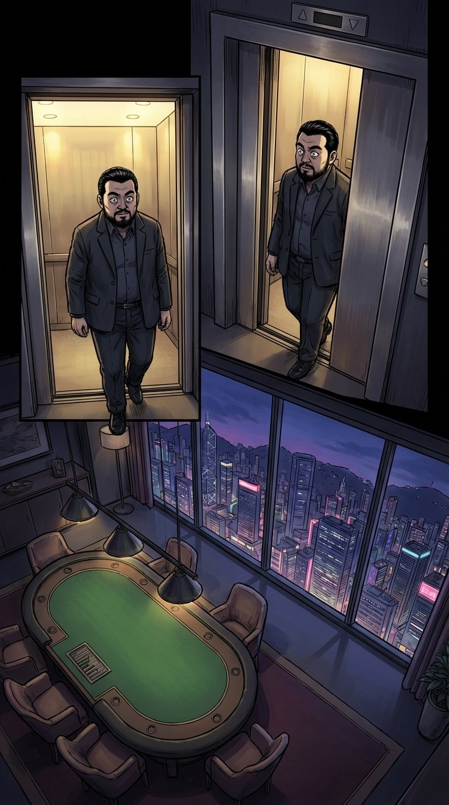
【全景·俯拍】第二天傍晚。CBD核心区顶层，落地窗外城市黄昏。电梯门开，朱江走出来。深色休闲西装。
赵哥在门口等他，脸色比昨晚好了点——至少今天没在抖。
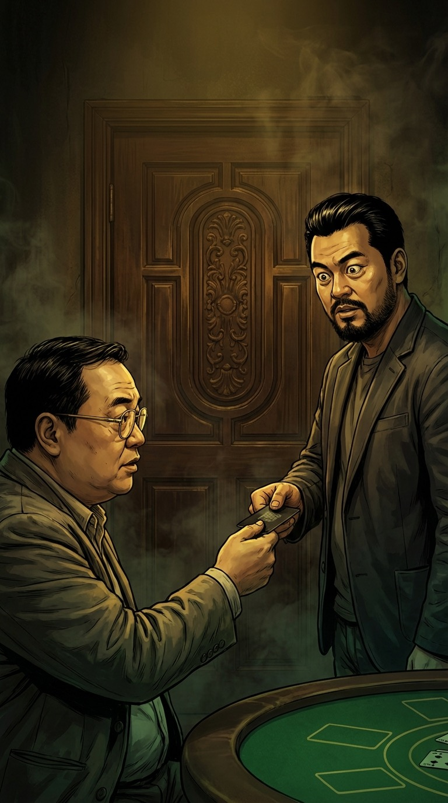
【中景·平拍】牌室入口，厚重实木门。赵哥递黑色卡片。
赵哥（低声）："进去之后少说话，林远不喜欢话多的人。"
不喜欢话多的人——说明林远靠观察获取信息。和我一样。这是个对手。
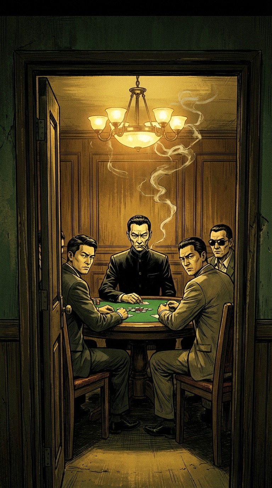
【全景·从门口推到牌桌】奢华但克制。深色木墙，绿色桌布德州扑克桌，暖色吊灯，雪茄味弥漫。
四双眼睛同时对准朱江——像四束聚光灯。
然后暗牌感知再次自动激活。
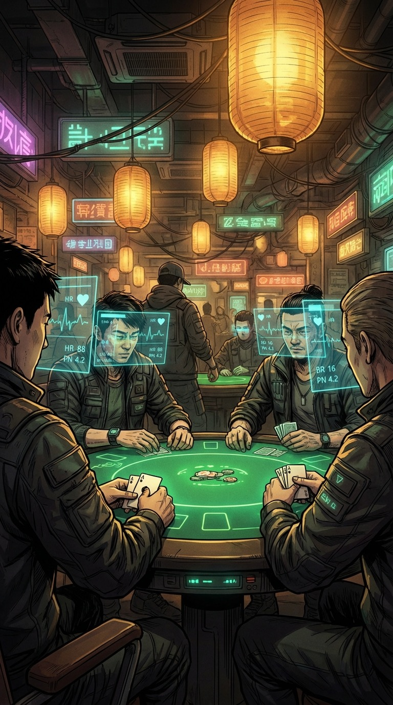
【主观镜头·慢速环绕】数据像弹幕一样涌入——
林远：心率62，呼吸平稳，面部肌肉零波动。完全控制自己生理反应的人。危险。
左侧地产商：心率88，额头微汗。紧张。鱼。
右侧地产商：心率76，但手指持续敲桌面。焦虑伪装成自信。中等威胁。
外贸商：心率71，正常偏低。老手，但不是高手。
墨镜男：……数据模糊。心率读不准。他在刻意控制呼吸？
五个人，我能"读"四个。墨镜男是个未知数。
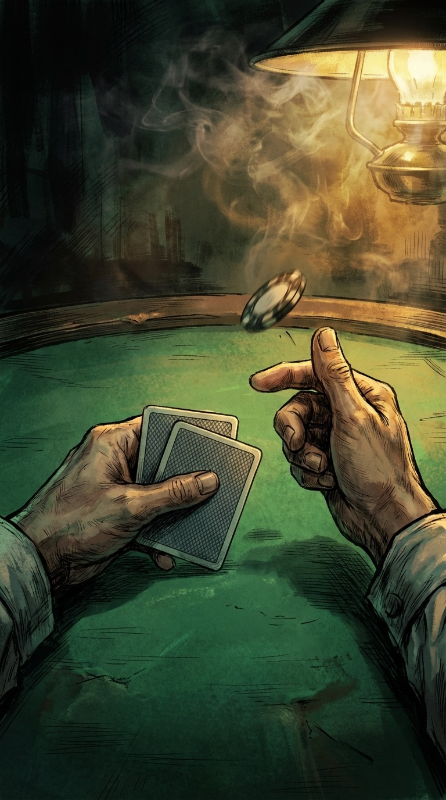
【特写·手部】底牌A-10。不算好牌，但也不是废牌。
第一手不是来赢钱的，是来做实验的。MVP——最小可行产品。先验证我的"模型"准不准。
朱江："跟。"推出5000筹码。
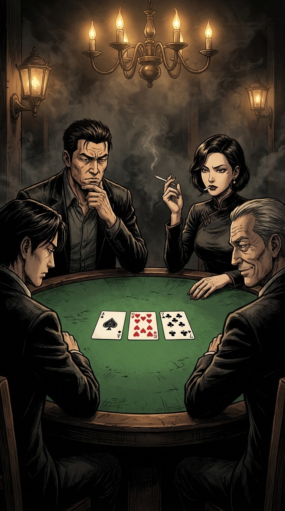
【中景·跟拍】公共牌翻出：K-10-3。暗牌感知像雷达扫描全场——
左侧地产商：心率从88飙到102。瞳孔扩大。他中了。大牌。
林远：零变化。62。这个人像个机器。
墨镜男：嘴角微微上扬了0.3毫米——如果不是暗牌感知，肉眼绝对看不到。
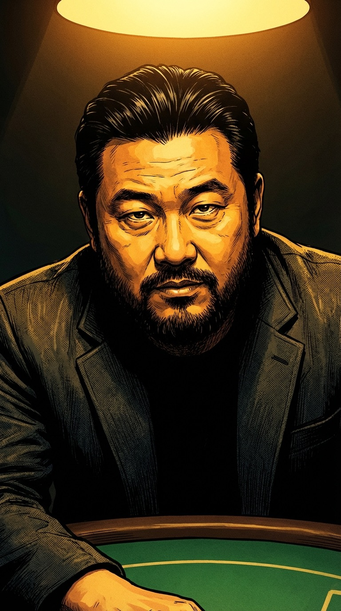
【特写·朱江表情】面无表情，但内心翻涌。
如果他是口袋K，配上公共牌的K，就是三条。概率……我靠，我的脑子在自动算概率？
一个数字浮现在朱江视野中：对方持有K的概率 87.3%。
朱江默默弃牌。
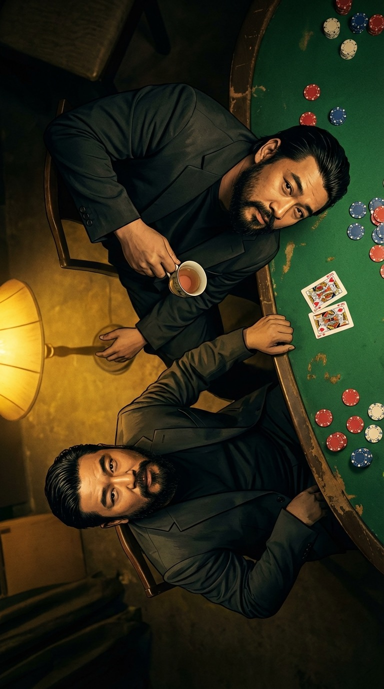
【全景·俯拍】牌局结束——地产商亮牌，K-K，果然三条。
朱江靠在椅背上，端起茶杯。
这个模型的accuracy是87.3%——比我公司那个AI强多了。
所以我花了两年调参数，结果我自己变成了参数。宇宙的幽默感确实比我的AI好。
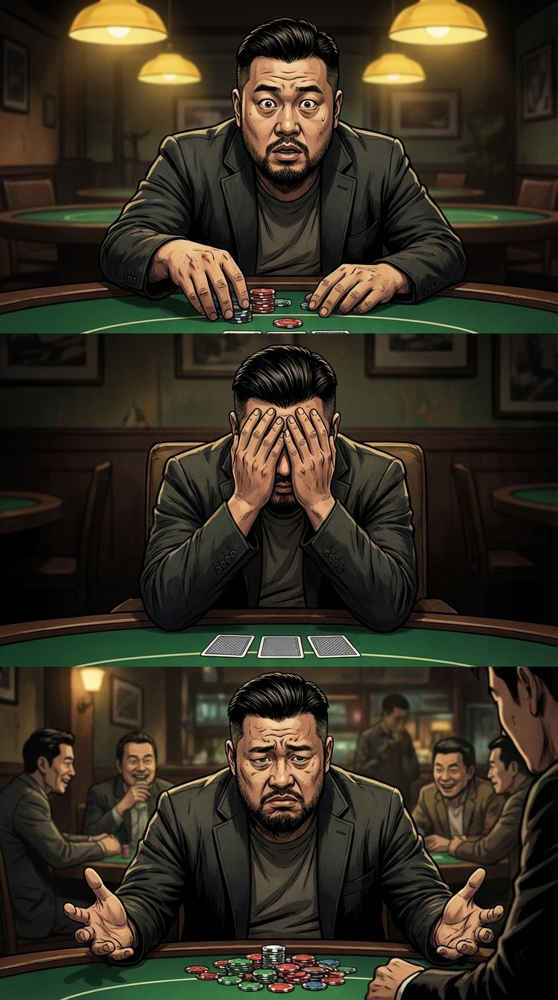
【中景·快速剪辑】接下来三手，朱江故意输了1.5万。跟了一手不该跟的，河牌圈bluff被抓。
右侧地产商笑了："赵哥带来的小兄弟，胆子挺大，运气差了点。"
林远面无表情地看了朱江一眼。心率依然62。
1.5万买了一个身份——"赵哥带来的菜鸟"。这是我投过的最划算的广告。
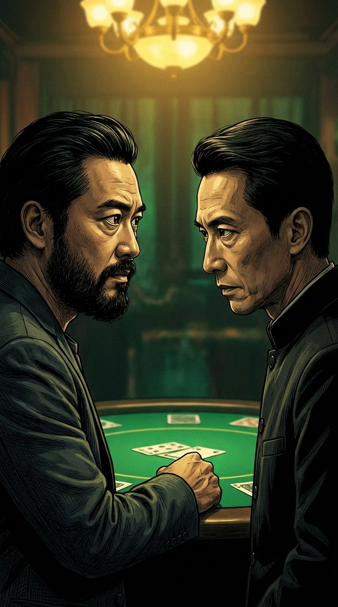
【特写·对视】朱江和林远四目相交，空气凝固。
我能读所有人，但我读不了林远。心率62，纹丝不动。这个人要么天生冷血，要么经过了极端训练。
林远终于开口："你是做什么的？"
朱江："做AI的。"
林远："AI。有意思。" 停顿。"AI能算出下一张牌是什么吗？"
朱江笑了："不能。但能算出你想让我以为下一张牌是什么。"
林远的眉毛动了0.5毫米——这是朱江第一次在林远身上读到反应。
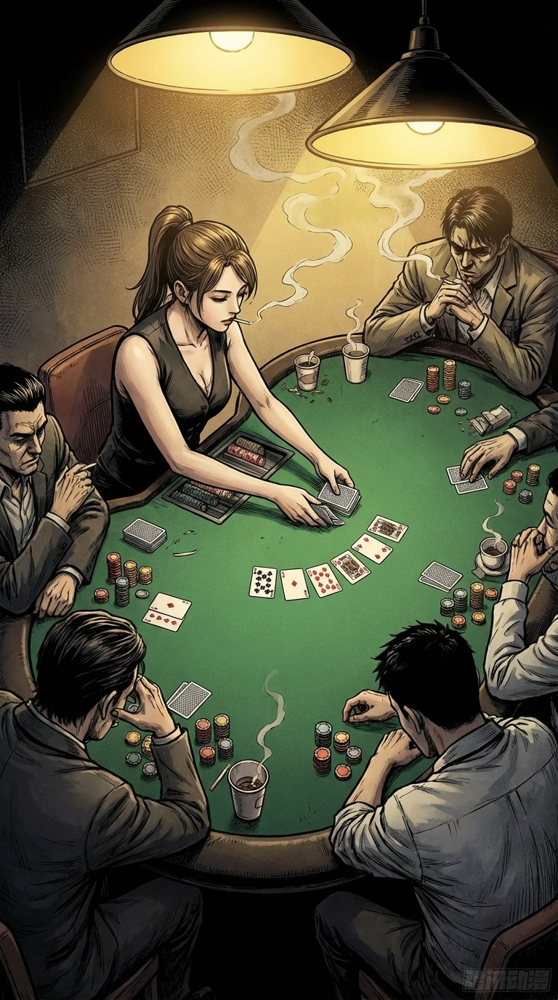
【全景·俯拍】两小时过去。桌上筹码分布发生变化。
朱江小赚3万——故意控制在"运气好的菜鸟"水平。暗牌感知已采集200多个数据点。每个人的"模型"越来越清晰。
林远赢了最多。但我发现了一件事——林远不是靠运气，也不是靠千术。他靠的是和我一样的东西：读人。区别是：林远靠40年经验，我靠超自然。
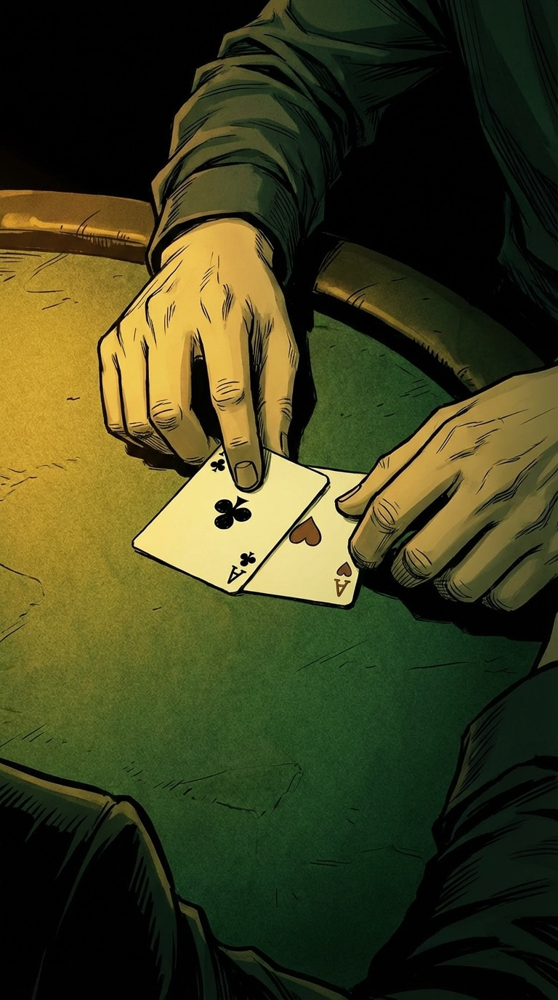
【特写·底牌】口袋A。A♠ A♥。最大的起手牌。
心跳从68跳到75——立刻用深呼吸压回来。如果我能读别人的心率，林远会不会也能读我的？
Loss曲线。0.71。0.71。0.71。心率回到68。
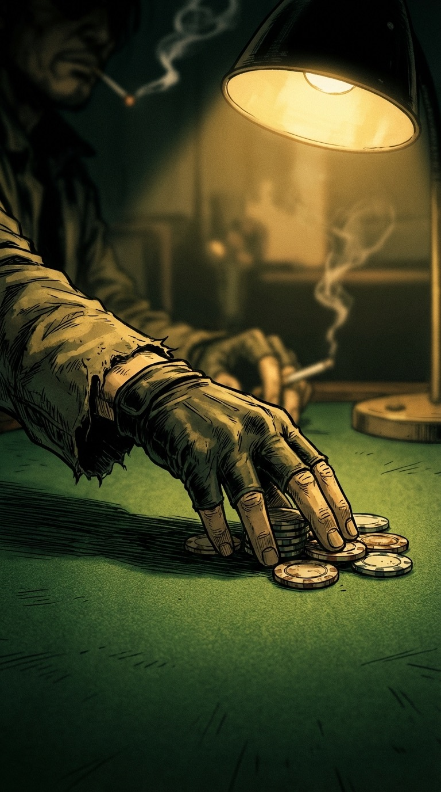
【特写·筹码推出】假装看了两遍底牌——"菜鸟"标志动作。推出5000筹码。
外贸商跟。右侧地产商跟。林远——加注到2万。
林远加注？心率63。从62变成了63。0.01%的波动。他有好牌，但不是顶牌。
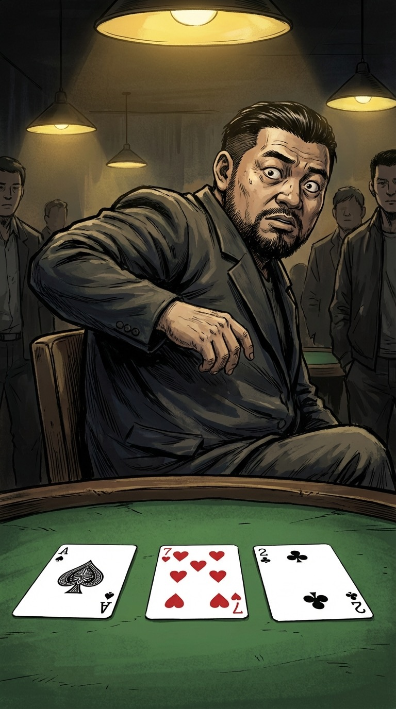
【全景·平拍】公共牌翻出：A♦ 7♣ 2♠。
朱江面无表情，微微动了一下身体——伪装不安。
三条A。当前桌面没有同花、没有顺子。几乎不可能输。
但他没有加注。他check了。继续装菜鸟：翻到好牌不知道加注——最经典的鱼的特征。
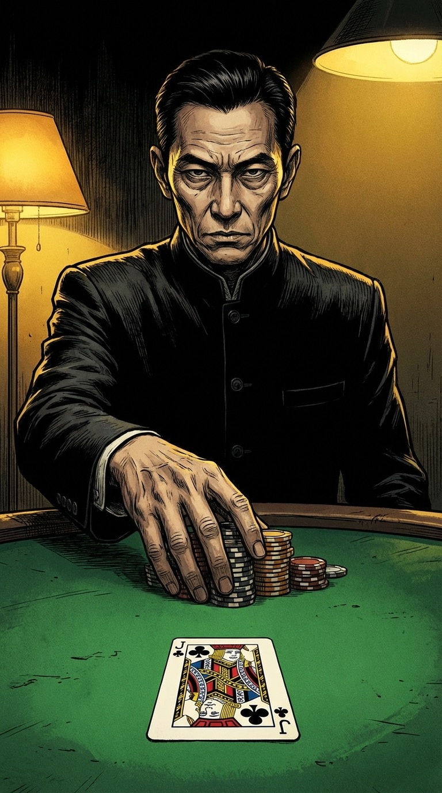
【中景·固定】转牌：J♥。林远推出一大堆筹码——加注到8万。今晚第一次主动下重注。
心率64。上升了2个点。林远也中了——但他中的不可能比三条A大。
外贸商弃牌。右侧地产商犹豫后也弃牌。只剩朱江和林远。
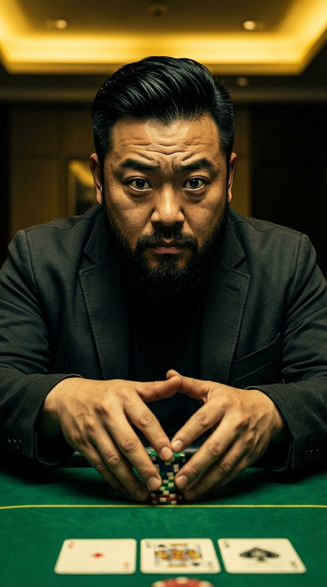
【特写·推筹码】朱江停了3秒。故意。假装在算筹码——菜鸟总是数不清自己有多少。
朱江："跟。"
林远看了他一眼。瞳孔缩小了0.2mm。他在评估我。他不确定我是真菜还是装菜。好。你继续猜。
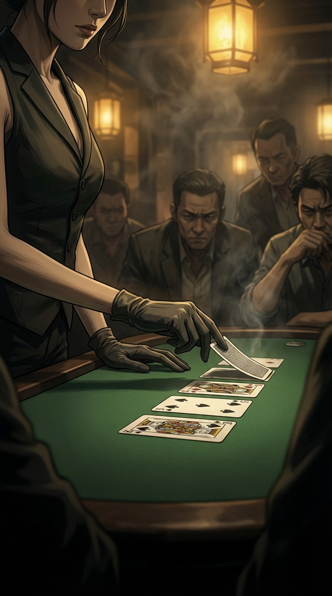
【特写·河牌翻出】4♦。公共牌面：A♦ 7♣ 2♠ J♥ 4♦。
除非林远藏了一对7或一对2形成葫芦——概率不到4%。
暗牌感知全功率运行：林远心率65，微微上升——
林远："All in。"
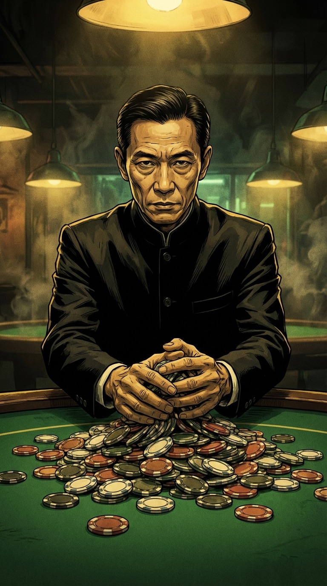
【中景偏近·平拍】林远全部筹码推向中央。双手交叠，冷冷看着朱江。筹码堆成小山。
赵哥在观战区站了起来——椅子向后滑出刺耳的声音。
葫芦概率3.8%，顶对+踢脚概率62%，纯bluff概率34.2%。
96%的概率我赢。这是我做过的最确定的赌注——比创业确定多了。
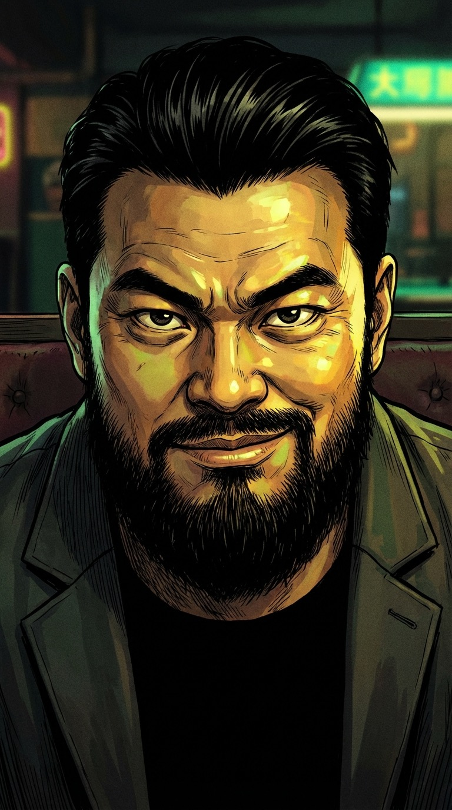
【特写·朱江眼神】冰冷、坚定。嘴角微微上扬——创业者确认product-market fit后的那种笑。
朱江："Call。"
翻开底牌。A♠ A♥。三条A。
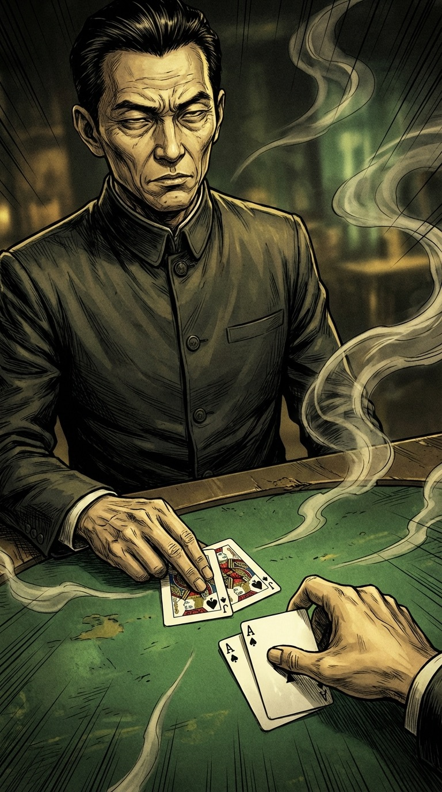
【中景·慢动作感】林远看到底牌后眼睛眯了一下——整晚最大的反应。
他翻开自己的牌。J♣ J♠。三条J。好牌——但不够好。
林远："你不像赵哥说的'不会打牌'。"
朱江："我确实不会。今天运气好。"
林远（整晚第一次笑）："运气好的人，第二次来运气就不一定好了。"
这是威胁，也是邀请。他想看我第二次来。彩池推过来。约50万。
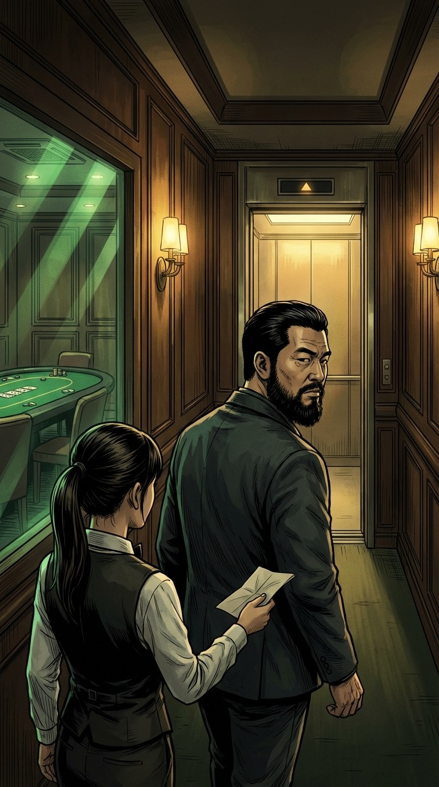
【中景·跟拍】走廊里。朱江走向电梯，小鱼快步追上来。
"等一下。"
她递过来一张折叠的纸条。
小鱼（低声）："别再来了。"然后转身走了。
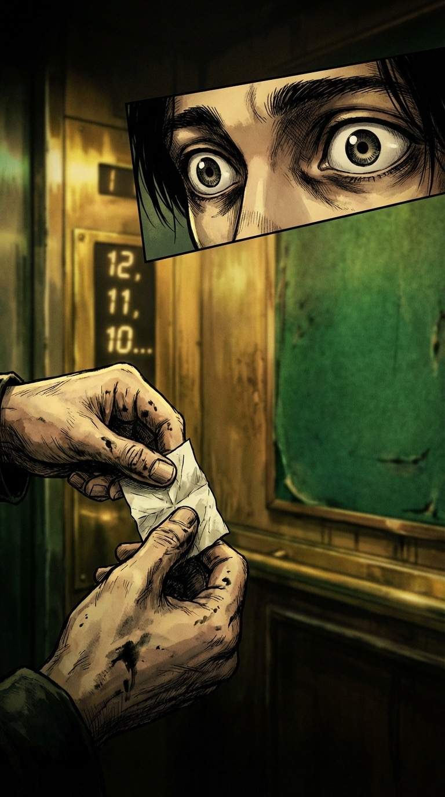
【特写·纸条展开】电梯里。朱江打开纸条，瞳孔放大。
纸条上只有一行字：
"林远故意输给你的。"
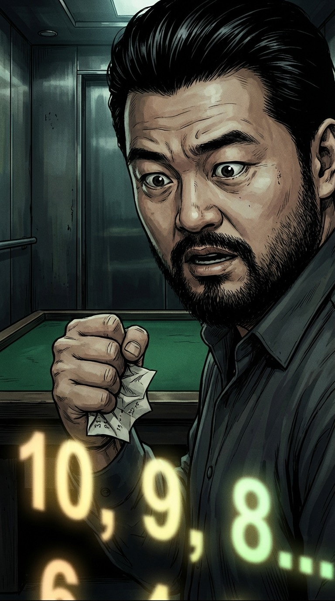
【特写·表情转变】震惊→凝重。电梯数字下降中。纸条被攥紧。
故意输？如果是真的——那整晚他"读"不到林远不是因为林远控制力强，而是因为林远从头到尾在给他喂假数据。
就像……一个对抗模型。GAN。
林远在训练他。观察他怎么打牌、怎么决策、在什么情况下跟或弃。
我以为我是玩家。但也许……我才是被训练的那个AI。
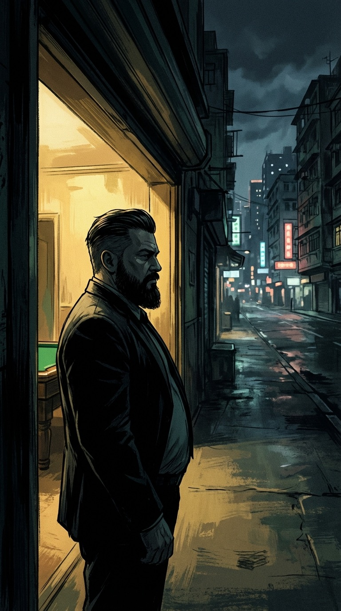
【全景·远景】写字楼门口。深夜。朱江背后灯光，面前黑暗的街道。城市灯火辉煌。
50万赢了。赵哥高兴得快哭了。
但口袋里那张纸条烧得他手疼。如果林远是故意的——他想要什么？他在下一盘更大的棋。而朱江刚刚走进了棋盘。
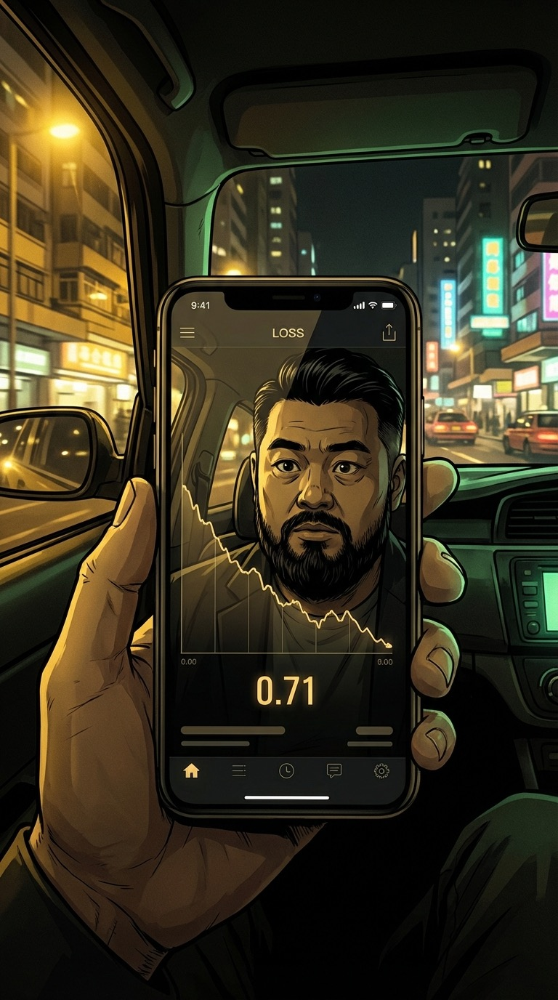
【特写·手机屏幕】出租车后座。Loss曲线：0.71。没变。
但他变了。
我的AI在学习识别模式，我在学习识别人的谎言，而林远……在学习识别我。
这不是赌。这是一场三层嵌套的AI博弈。
朱江给赵哥发了条微信："下周还有局吗？"
三秒后赵哥回复了17个感叹号。
这次不是为了赵哥的200万。他想搞清楚：林远到底在训练什么模型。